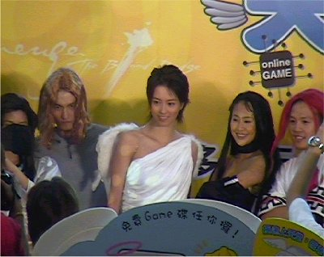

2001年7月15日

咋天約2:00pm在沙田新城市廣場舉行了第二次的天堂試玩會（第一次的在6月22日旺角Sniper舉行），除了試玩之餘及有扮演了遊戲角色的舞蹈員作滑稽的舞蹈表演。當天堂代言人梁詠琪出來的時間，全場情緒一度高漲，其後梁詠琪簡介爭奪保時捷比賽的玩法，其後更和遊戲角色們及Gamania的員工合照，之後更為天堂的玩家簽名留念。當她離去時，大量歌迷連保時捷也不顧，寧靜追上和梁詠握手。
Copyright(C)1998-2003 Gabriel Leung. All Rights Reserved.